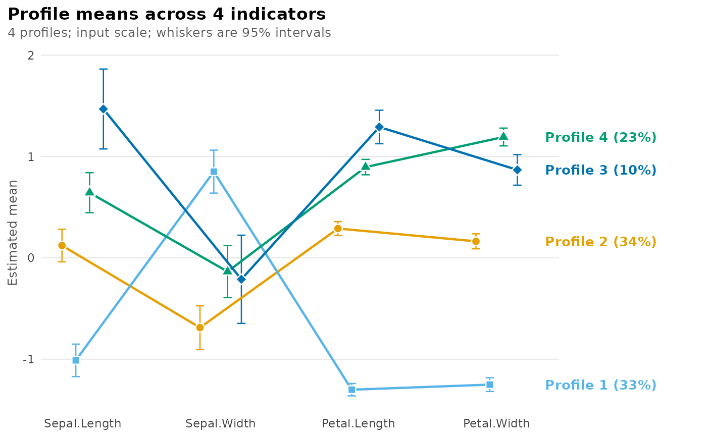
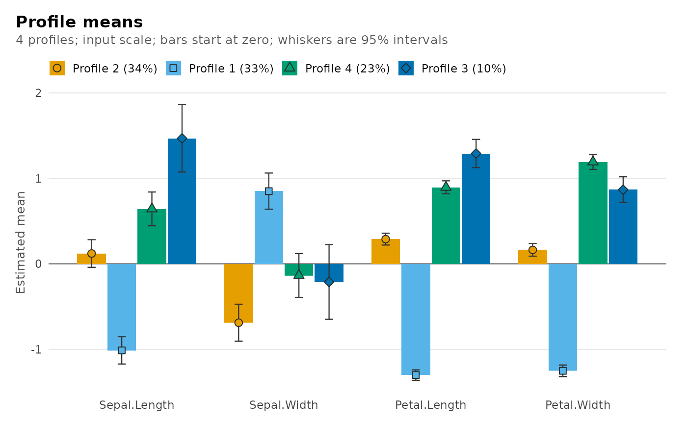
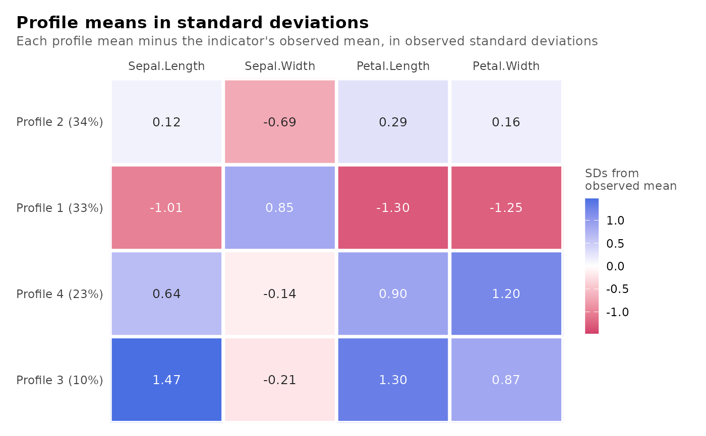
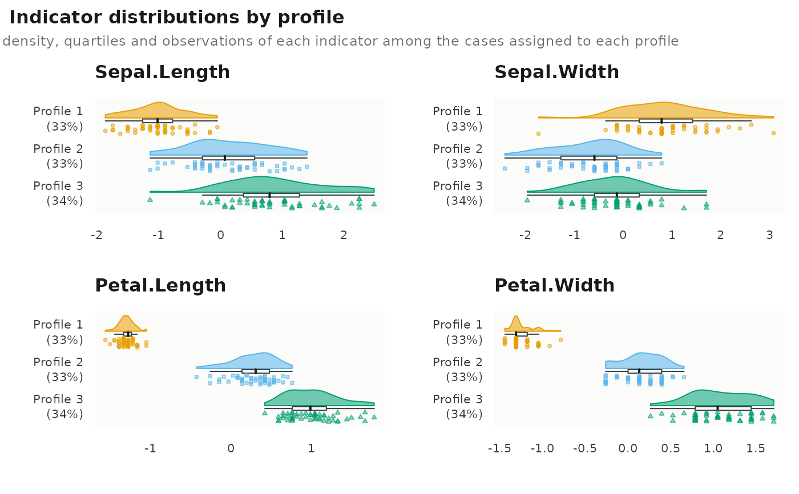
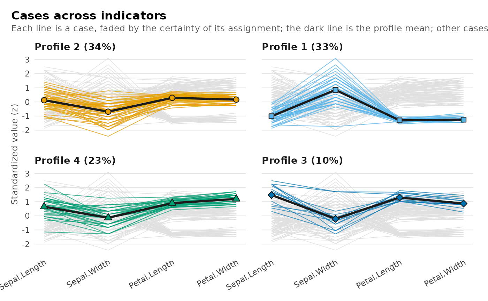
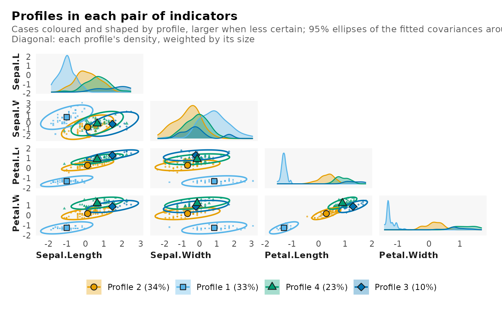
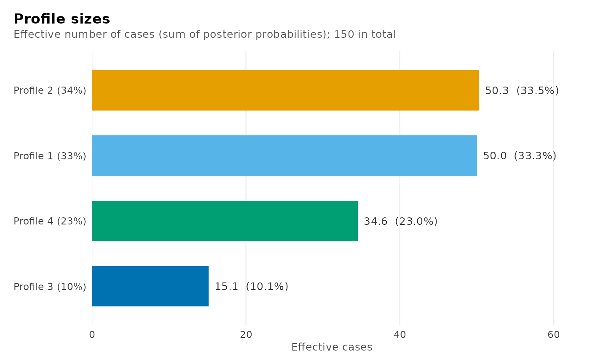

Fits latent profile models with the latents package and keeps the
candidate with the lowest BIC. Every combination of n_profiles and
models is fitted by latents::enumerate_lpa(); a single combination is
simply a grid of one.
The result is a latents fit, so its verbs apply directly:
as.data.frame(fit) for profile means, latents::diagnostics(fit) for
classification quality, latents::get_results(fit, what) for any table.
Arguments
- data
A data frame.
- vars
Character vector of numeric columns to cluster on.
- n_profiles
Number(s) of profiles, each at least 2: one value, or a range such as
2:5to compare.- n_clusters
Alias for
n_profiles.- models
Covariance structure(s) as three-letter mclust codes (e.g.
"EEE","VVI"), or"all"for all 14.- scaling
Transformation applied to
varsbefore fitting:"standardize"(mean 0, SD 1),"center","minmax"(0 to 1), or"none".- n_starts
Random starts per candidate.
- seed
Random seed passed to latents.
- na_action
"omit"drops rows with a missing value invars;"fail"raises an error instead.- verbose
Report progress with
message().
Value
An object of class c("saqr_clustering", "multilpa"): the
selected latents fit, fitted to the scaled data. Methods:
print(), summary() (one row per candidate), fitted() (the input
data with profile assignments), plot().
Errors
Raises saqrmisc_bad_input for unknown models, non-numeric or constant
vars, missing values under na_action = "fail", or fewer than 10
complete rows; saqrmisc_no_converged when no candidate converged.
References
Vermunt, J. K. (2003). Multilevel latent class models. Sociological Methodology, 33, 213-239.
Examples
# \donttest{
if (requireNamespace("latents", quietly = TRUE)) {
set.seed(1)
vars <- c("Sepal.Length", "Sepal.Width", "Petal.Length", "Petal.Width")
fit <- clustering(iris, vars, n_profiles = 2:4, models = c("EEE", "VVI"))
fit
summary(fit)
as.data.frame(fit)
fitted(fit)
plot(fit)
}
#> Fitting 6 candidate(s): 2, 3, 4 profiles x EEE, VVI.
#> Selected EEE with 4 profiles (BIC = 808.1).







# }